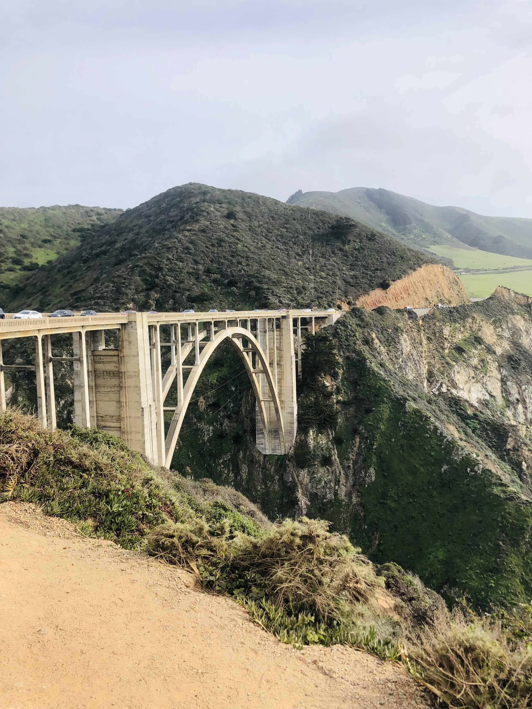

Lab 9 - Styling Block Elements
Challenges
The challenges for this lab are:
- Modify the margins and padding of my content div and add a border
- Change the color of your body and your content div
- Style your image, and adjust the height or the width of your image
Problems
When I was using ordered list the index of the list were displaying on the left side. To solve that I tried many things but could not solve it and then I searched it on the internet and then I saw an attribute called list-style-position: inside; and after using that property I was able to display my index next to the list.
Results
I created a web page just like I wanted to. I styled the margins and padding of my content div and added a border, changed the color of my body and content div, styled my image by giving it the hover function so it increases it's size by 10% if you hover over it.

CST251 Homepage Link